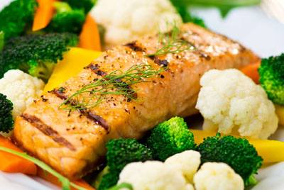

Welcome to Blog
Recetas de rechupete - Recetas de cocina caseras y fáciles - Recetas caseras y sencillas con preparación paso a paso, fotografías y truquillos. Para todos los gustos y bolsillos.
2021.07.06 18:06Recetas de rechupete Recetas de cocina caseras y fáciles
Recetas de Postres y dulces Pescado y marisco Pollo y otras carnes Arroz Pasta Ensaladas y verduras Tapas y aperitivos Sopas, guisos y legumbres Pan, masas y rebozados Patatas, salsas y guarniciones Para ocasiones especiales Bebidas, cócteles y licores Aprende a cocinar Recetas de pollo Actualidad gastronómica Recetas fáciles y baratas Recetas de carnes y avesCachopo al estilo gallego. Cachopo relleno de lacón y queso de Arzúa-Ulloa
⭐ 5 Media 30 minutos 3,2 €/persona
Este plato tan típico de Asturias, poco a poco se ha ido expandiendo por España, llegando a las cartas de muchos restaurantes. El secreto del éxito de cachopo es por supuesto, la calidad de sus ingredientes y que es una de esas recetas “potentes”, donde comen varios, el precio no es muy alto y además […]
Cachopo de ternera. Receta asturiana paso a paso
⭐ 3.4 25 min 2.6€/pers.Frixuelos asturianos
⭐ 3.5 40 min 0.3€/pers.Cenas ligeras, sabrosas y muy fáciles de preparar. 20 recetas para triunfar en casa
⭐ 3.8Porra antequerana. Receta andaluza
⭐ 3 20 min 1€/pers.Alimentos de temporada en julio
⭐ 3.5Tosta de salmón y naranja. Aperitivo fácil y delicioso
⭐ 3.5 10 min 0.35€/pers.Vichyssoise o crema de puerros
⭐ 3.1 35 min 0.8€/pers.Smoothies o batidos de frutas
⭐ 4.5 10 min 1€/pers.Natillas de leche caseras
⭐ 3.2 15 min 0.35€/pers.Ensalada campera o ensalada de Verano
⭐ 3.4 45 min 1.8€/pers.Budin de pan casero. Receta fácil y barata para triunfar en casa
⭐ 3.6 105 min 0.4€/pers.Cómo hacer un cebiche tradicional peruano paso a paso
⭐ 3.7 25 min 5€/pers.Recomendamos de ABC Bienestar
Cuscús de melocotón, queso y pistachos: una mezcla prodigiosa en verano
Helado cremoso de zanahoria: la original receta vegetal para el postre
Nueve recetas de brochetas para tus cenas veraniegas
Nuestras mejores recetas
Albóndigas en salsa. Receta fácil al estilo de mi abuela Cómo hacer churros Cordero al horno o asado Estofado de ternera Guacamole mexicano fácil Lasaña de carne casera. Receta tradicional paso a paso Masa de pizza italiana Pollo al curry Fideuá de marisco y pescadoDe temporada
Ensalada de pasta fácil y deliciosa. Receta perfecta para el buen tiempo Arroz chaufa Cómo hacer el mojito perfecto Ensalada de arroz con atún. Receta fácil y fresquita Ensalada campera o ensalada de Verano Cómo hacer gazpacho andaluz casero. La receta tradicional más fácil para el verano Cómo hacer salmorejo cordobésTop de recetas baratas
Pollo asado fácil Tortilla de patatas Lentejas con chorizo Arroz con pollo Bizcocho de yogurt Brownie de chocolate Tortitas o pancakes caseros Hummus o crema de garbanzosConsejos de cocina
Cómo hacer un arroz blanco perfecto Cómo cocer huevos duros Cómo hacer crema pastelera Cómo hacer pan casero fácil Consejos para hacer quinoa Cómo preparar merengue italianoColecciones de recetas
Top 10 de aperitivos que siempre triunfan Recetas para bebés Leyendas urbanas que te has creído al cocinar. Verdades o mentiras en la cocina Aprende a cocinar desde cero Recetas de ensaladas Cómo reemplazar ingredientes de cocina en repostería. Levadura, mantequilla, huevos, azúcar, gelatina… Sushi. Consejos para hacer sushi casero cómo un profesional. Tipos y recetasActualidad gastronómica
Alimentos de temporada en junio. ¿Qué comer y comprar este mes? Batch cooking. Comer bien en el tiempo justo Verduras y hortalizas de Verano Cenas rápidas y saludables Alimentos de temporada No tirar comida. Consejos y trucos para aprovechar restos Anisakis. 7 preguntas que te pueden evitar un disgustoRecibe un email semanal con las nuevas recetas y recomendaciones de rechupete
SuscríbeteRecetas por categorías
Recetas por orden alfabético Postres y dulces Carnes, pollo y otras aves Sopas, guisos y legumbres Arroz Pasta Pescado y marisco Panes, masas y rebozados Ensaladas y verduras Patatas, salsas y guarniciones Tapas y aperitivos Bebidas, cócteles y licores Para ocasiones especiales Recetas por temática Recetas fáciles Cómo hacerSobre el cocinero
Empecé Recetasderechupete.com en 2009. En estos años he escrito recetas y libros, grabado vídeos, he dado cursos presenciales y clases en escuelas de hostelería. Y cocinar para mi familia y amigos sigue siendo mi gran pasión. En esta web quiero compartir contigo toda mi experiencia, para que disfrutes de la cocina tanto como yo y todos tus platos salgan de rechupete.
Más sobre mí
Puedes encontrarme en
Facebook Twitter PinterestEl cocinero recomienda
ABC Bienestar Amigas.Top Connectif Marketing Automation eCommerce Javi Recetas Piensa en Pixels Recetas para bebés Slides Carnival Uno de dos Velocidad cuchara Ya Vino 830.000 213.000 94.000 78.000 28.000 23.000 © 2009-2021 Recetas de rechupete - Todos los derechos reservados Términos de uso · Política de privacidad · Política de cookies
Diseñado por PIENSA en PIXELS · Cloud hosting con StackScale
